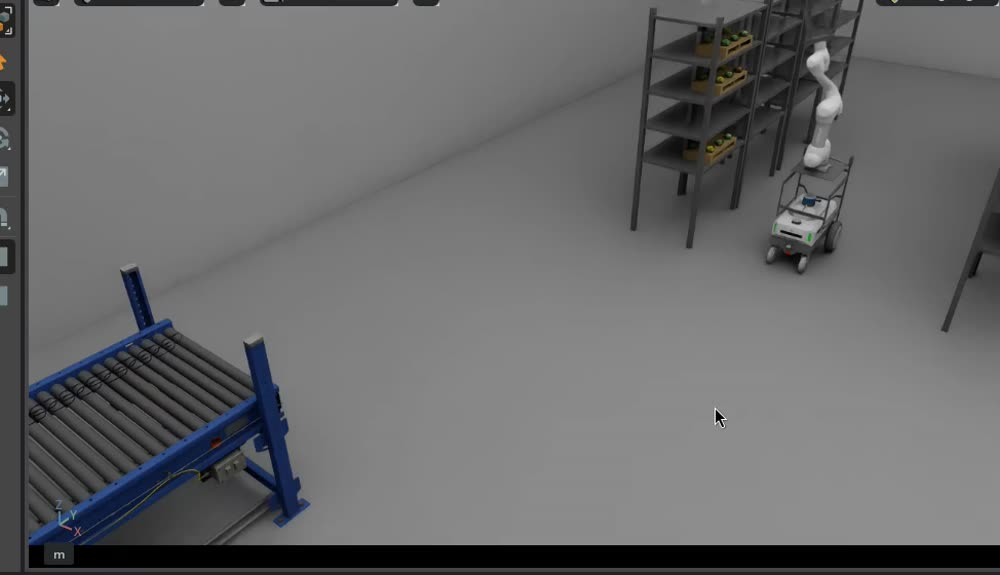
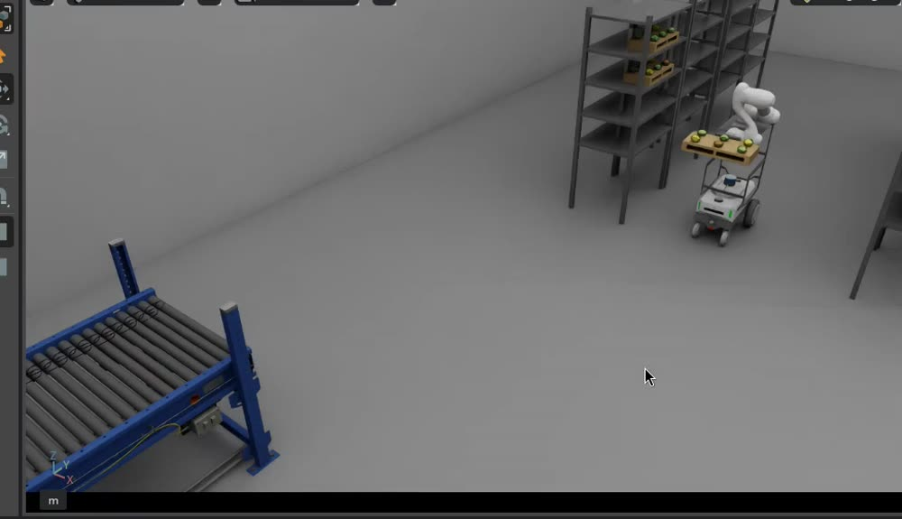

디지털 트윈 기반 공장형 스마트팜 생육·물류 자동화 · 2026-09-27 본편 3분 55초 + EX.(개발 중) 50초
이 파일 docs/최종영상_콘티_260927.html · 글 스토리보드 docs/최종영상_스토리보드_260927.md
— 둘 다 브랜치 feature/lwh 에 있음
초록 라벨 실제 기록 은 2026-09-26 실행에서 뽑은 실제 화면이고,
회색 라벨 구도 스케치 는 아직 녹화가 없어 구도만 그린 것임. 그대로 찍으면 됨.
⚑ 녹화 전 필독 7가지
30 fps 이상으로 녹화할 것. 지금 record_rig.sh 기본값인 10 fps 로 찍으면,
본편에서 4~10배속을 걸었을 때 1초에 1~2장밖에 안 남아 화면이 뚝뚝 끊깁니다. 이 한 줄만 바꾸면 됩니다 — FPS=30
해상도는 1920×1080 을 권장합니다. 지금 설정(Isaac 1440×900 · RViz 1680×1050)으로 찍어도 쓸 수는 있지만,
편집에서 화면을 키우면 흐려집니다. 바꾸기 어려우면 그대로 두고 확대 편집만 피하면 됩니다
Isaac 뷰포트만 나오게. 좌우 패널·툴바·마우스 커서가 같이 찍히면 본편에 못 씁니다(EX. 챕터에는 써도 됩니다)
시점은 네 가지만 — 행위자뷰(포크·그리퍼·카터 뒤) / 대상뷰(팔레트·트레이) / 풀샷 / 롱샷.
각 컷에 어느 시점인지 이 콘티에 적어 두었습니다
같은 동작을 시점만 바꿔 3~4번 다시 찍어 주세요.
편집은 한 동작을 여러 각도로 이어 붙이는 식으로 합니다. 예를 들어 팔레트를 드는 장면을 포크 시점 2초 → 풀샷 2초로 잇는데,
테이크마다 로봇이나 팔레트가 있던 자리가 다르면 컷이 바뀌는 순간 물건이 순간이동한 것처럼 보여서 쓸 수 없습니다.
그래서 장면을 리셋하고 똑같은 명령 순서로 다시 돌린 다음, 카메라만 바꿔서 찍어 주시면 됩니다
실패한 것도 지우지 말고 같이 올려 주세요. 도킹을 다시 시도하는 장면, 사람 때문에 멈추는 장면은 성공 영상보다 쓸모가 큽니다
같은 실행의 로그와 bag, 그리고 그 영상이 실제로 몇 초짜리인지를 함께 적어 주세요.
화면에 띄울 수치의 출처가 되고, 몇 배속을 걸지 계산하는 데 필요합니다
BRD 3.1 의 문제 ①인력 의존 ②고소·중량물 위험 을 사람 장면으로 보여 줌. 실제 농장 촬영본이 없고 남의 사진은 영상에 못 쓰므로 AI 생성으로 만듦(프롬프트는 스토리보드 8절).
A-01풀샷구도 스케치
작업자가 발판 위에서 젖은 트레이를 내리다 휘청인다
0:07AI 생성문제 ②
자막: 고단 랙의 트레이를 사람이 직접 내린다
담당 이원호 · 외부 생성형 AI
A-02롱샷구도 스케치
트레이를 안고 좁은 통로를 걸어 옮긴다(반복) → 뒤 3초에 문구 세 개가 박힌다
0:08AI 생성 + 그래픽문제 ①
자막: 같은 이송이 하루에도 수십 번 → 중량물 · 인력 의존 · 추적 불가
담당 이원호 · 외부 생성형 AI + 문구는 편집에서 얹음
B. 도입 — 해결 맛보기 0:15 · AI 생성 + 그래픽 · 담당 이원호(편집)
문제 태그(0.8초 흑백) → 해결 장면(2.2초)을 네 번. 여기서는 우리 녹화본을 쓰지 않습니다.
시뮬레이션 화면은 본론(C~J)에서 처음 나오게 두고, 도입부는 AI 생성 영상으로 “이런 게 가능해진다” 는 느낌만 줍니다. 생성 요령 — 엔딩 K-03 과 같은 세계관이므로, K-03 을 만들 때 같은 프롬프트로 짧은 클립 3개를 더 뽑아 B-01~B-03 에 쓰면 톤이 자동으로 맞습니다.
B-01풀샷구도 스케치
문제 ② 고소·중량물 → 매니퓰레이터가 얹힌 AMR 이 랙에서 트레이를 꺼낸다
0:03AI 생성태그 0.8s + 장면 2.2s
문제 ② 고소·중량물
담당 이원호 · K-03 과 같은 프롬프트에서 뽑음
B-02롱샷구도 스케치
문제 ① 인력 의존 → 트레이를 실은 AMR 이 통로를 스스로 지나간다
0:03AI 생성
문제 ① 인력 의존
담당 이원호 · K-03 과 같은 프롬프트에서 뽑음
B-03풀샷구도 스케치
문제 ③ 작업 누락 → 검사 구역의 로봇팔이 작물을 한 포기씩 내려다본다
0:03AI 생성
문제 ③ 작업 누락
담당 이원호 · K-03 과 같은 프롬프트에서 뽑음
B-04그래픽구도 스케치
문제 ④⑤ 설비 단절·도입 리스크 → 공정 상태가 한 줄로 이어지는 그래픽
0:03그래픽
문제 ④ 설비 단절 · ⑤ 도입 리스크
담당 이원호(편집) · 녹화본이 아니라 그래픽이므로 도입부에 써도 됨
B-05타이틀구도 스케치
제목 카드 — 여기서 음악이 올라가고 도입부가 끝난다. 시뮬레이션 화면은 그 다음부터
0:03그래픽
디지털 트윈 기반 공장형 스마트팜 생육·물류 자동화
담당 이원호(편집)
C. 본문 0 — 시스템과 모델링 0:15 · 담당 백승주 · 봉승현
"3D 모델이 아니라 물리 기반 검증 환경" 이라는 주장을 그림으로 증명하는 장(9/27 회의 2.4). 물리 값이 화면에 실제로 보여야 함.
C-01롱샷실제 기록
장면 전체가 보이고 구역 라벨이 하나씩 켜진다
0:05×2원본 0:10
랙 · 통로 · 인계(턴테이블) · 비전룸 · 배출
담당 백승주 · 참고 스틸은 지도 화면. 실제는 Isaac 조감으로 촬영
C-02풀샷구도 스케치
LiftRig 가 분해되었다가 합쳐진다 — 네 부품과 앞뒤 정의
0:05×2원본 0:10
Nova Carter + Lift + M0609 + Fork · footprint 0.75 × 0.50 m
담당 백승주
C-03풀샷구도 스케치
팔레트를 떨어뜨려 마찰·충돌이 실제로 계산됨을 보여 준다
0:05×4원본 0:20
RigidBody · Mass · Friction · Collider
담당 백승주 — 수치는 실제 에셋 설정값을 표시(스케치의 8.0 kg / 0.7 은 예시)
D. 본문 1 — TRANSFER + PICK_HARVEST 0:25 · 담당 봉승현
랙 층계 재배치 2회 + 수확 대상 파지. 원본이 약 6분 30초라 장 전체 평균 ×15 로 줄이지만, 한 컷 안의 배속은 최대 ×10 이고 나머지는 컷 사이 생략으로 줄임.
자막 한 줄: 「자란 작물은 무거워져 아래 단으로 — 구조 안정성과 출고 동선」 컷 합 0:24 + 인서트(A-01 흑백) 0.8초 = 0:25

D-01롱샷실제 기록
랙 앞으로 접근하고 리프트가 3단 높이까지 올라간다
0:04×6원본 0:24
TRANSFER · 리프트 적재 시 0.02 m/s
담당 봉승현
D-02행위자뷰(포크)구도 스케치
포크가 팔레트 밑으로 들어가 들어올린다
0:05×4원본 0:20
RACK_L3 → RACK_L2
담당 봉승현 · 카메라 Cam_Fork 신규
D-03대상뷰(팔레트)구도 스케치
팔레트 입장에서 — 아래 단으로 내려가 안착한다
0:04×6원본 0:24
PALLET_002
담당 봉승현 · 카메라 Cam_Pallet 신규
D-04풀샷구도 스케치
두 번째 팔레트 재배치 — 한 컷으로 압축
0:04×10 (상한)원본 0:40
RACK_L4 → RACK_L3
담당 봉승현 · 인서트(A-01 흑백 0.8초)가 이 뒤에 붙음
D-05행위자뷰(포크)구도 스케치
수확 대상 팔레트를 집는다 — 주행 허가가 나오는 순간
0:04×8원본 0:32 (실측 186초 중)
PICK_HARVEST · safe_to_navigate = true
담당 봉승현

D-06롱샷실제 기록
팔레트를 얹고 운반 자세로 바꿔 통로 쪽으로 방향을 잡는다
0:03×6원본 0:18
joint_1 180° → 270°
담당 봉승현
E. 본문 2 — NAVIGATION 0:42 · 담당 이원호
본문에서 가장 긴 장. 판단이 일어나는 세 순간(E-03 사람 정지 · E-06 면 검출 · E-08 도킹 정지)은 배속하지 않음. 실측 원본 94초. 컷 합 0:41 + 인서트(A-02 흑백) 0.8초 = 0:42
E-01롱샷실제 기록
좁은 통로를 후진으로 빠져나온다 (제자리 회전 불가)
0:05×4원본 0:20
NAVIGATION · Smac Hybrid-A* · Reeds-Shepp
담당 이원호
E-02화면 캡처실제 기록
같은 순간의 RViz2 — 경로 · 팽창 영역 · 라이다 스캔
0:04×4원본 0:16
global plan · /scan
담당 이원호 · Isaac 화면과 같은 시각으로 맞춰 편집
E-03풀샷구도 스케치
작업자가 차선 위로 걸어 들어오고 카터가 스스로 멈춘다
0:06×1 실시간원본 0:06
collision_monitor · HumanStop
담당 이원호 · --human-crossing 으로 실행. 멈추는 테이크가 나올 때까지 반복
E-04롱샷구도 스케치
작업자가 비켜나고 카터가 스스로 다시 출발한다
0:04×2원본 0:08
/cmd_vel 재개
담당 이원호
E-05풀샷실제 기록
접근 지점에 도착해 잠깐 멈춘다 (도킹 시작 전 대기)
0:03×2원본 0:06
FEEDER_APPROACH (world x −2.19, y −1.55)
담당 이원호
E-06화면 캡처실제 기록
라이다가 턴테이블 앞면을 잡는 순간 — 점군 위에 직선과 목표점
0:05×1 실시간원본 0:05
RANSAC face 1.15 m
담당 이원호 · RViz2 를 따로 녹화. Isaac 화면만으로는 "센서로 본다" 가 전달되지 않음
E-07행위자뷰(카터 뒤)실제 기록
뒤(팔 쪽)를 보이며 후진으로 들어간다
0:07×2원본 0:14
SETTLE → ALIGN → REVERSE · face_dist 1.82 m
담당 이원호 · 카메라 Cam_Carter_Rear 신규(참고 스틸은 풀샷)
E-08풀샷실제 기록
정지 직전 — 수치가 목표로 수렴한다 (슬로우)
0:04×0.5 슬로우원본 0:02
0.937 m · +1.08° · 0.000 m
담당 이원호 · 인서트(A-02 흑백 0.8초)가 이 뒤에 붙음
E-09롱샷실제 기록
도킹 완료 전경 — 벨트 앞에 직각으로 서 있다
0:03×2원본 0:06
reached_station = FEEDER_DOCK
담당 이원호
F. 본문 3 — PLACE_INSPECT 0:18 · 담당 봉승현
실측 원본 73초. 차체가 실제로 멈춘 것을 확인한 뒤에만 팔이 움직이는 것이 이 장의 요지임.
F-01풀샷실제 기록
차체 정지를 확인한 뒤에야 팔이 움직이기 시작한다
0:04×4원본 0:16
PLACE_INSPECT · 차체 정지 확인 0.5 s
담당 봉승현
F-02대상뷰(팔레트)구도 스케치
팔레트 입장에서 — 벨트 위로 내려앉는다
0:06×4원본 0:24
팔 베이스 ~ 놓을 자리 0.809 m
담당 봉승현 · Cam_Pallet
F-03행위자뷰(포크)구도 스케치
포크가 여섯 단계로 나뉘어 빠져나온다
0:05×5원본 0:25
FORK_OUT 1 → 6
담당 봉승현 · Cam_Fork
F-04롱샷실제 기록
카터는 그대로 서 있고 팔레트만 벨트에 남는다
0:03×4원본 0:12
SUCCEEDED
담당 봉승현
G. 본문 4 — CONVEY · PREPARE 0:18 · 담당 봉승현
컨베이어가 팔레트를 비전룸 앞까지 옮기고, 이송 프레임이 트레이를 팔 작업 반경 안으로 밀어 줌.
자막 한 줄: 「벨트 줄은 팔이 닿지 않는다 — 0.27 m 를 밀어 작업 반경 안으로」
G-01대상뷰(팔레트)실제 기록
줄기 벨트가 팔레트를 물고 이송한다
0:05×6원본 0:30
CONVEY_TO_INSPECT · 벨트 0.30 m/s
담당 봉승현 · 참고 스틸은 풀샷. 실제는 Cam_Pallet
G-02롱샷구도 스케치
교차점에서 방향을 바꿔 비전룸 쪽으로 간다
0:04×6원본 0:24
TurnTable = 공정 간 Buffer
담당 봉승현
G-03풀샷구도 스케치
비전룸 카메라 앞에서 정확히 멈춘다
0:03×4원본 0:12
reached_station = INSPECT_STOP
담당 봉승현
G-04행위자뷰(프레임)구도 스케치
이송 프레임이 내려앉고 PlateN 이 트레이를 로봇 쪽으로 민다
0:06×4원본 0:24
PREPARE_INSPECT · 포기 자리 오차 ≤ 20 mm
담당 봉승현
H. 본문 5 — INSPECT + CULL 0:40 · 담당 백승주
검사 결과가 실제 솎아내기로 이어지는 것을 보여 주는 장. 판정(H-02)과 집기(H-04)는 실시간으로 둠. 컷 합 0:39 + 문구 인서트 0.8초 = 0:40 — A-03 을 뺐으므로 이 장의 인서트는 영상이 아니라 검은 화면에 「작업 누락 · 추적 불가」 한 줄로 처리함
⚠ H-05 / H-06 은 지금 코드 그대로는 찍히지 않음.inspection_cull_station.py 는 불량 포기를 SortBin_1 / SortBin_2 에
클래스와 무관하게 번갈아 버림(파일 머리말 · SORT_BOX_PATHS).
9/27 회의 결정 6(노랑·갈색을 각각 지정된 위치로)에 맞추려면 클래스별로 통을 고르는 수정이 9/28 전에 필요함.
어려우면 두 컷을 합쳐 「불량 포기 제거」 0:08 로 줄이고 결정 6 을 조정해야 함 — 백승주 회신 요청
H-01풀샷구도 스케치
팔이 검사 자세로 이동한다
0:04×4원본 0:16
INSPECT
담당 백승주
H-02행위자뷰(손목)구도 스케치
손목 카메라 화면 그대로 — 여섯 칸에 판정 박스가 뜬다
0:07×1 실시간원본 0:07
YOLO best.pt · dark_green / yellow / brown
담당 백승주 · 스테이션이 저장하는 annotated 프레임을 그대로 쓰면 됨
H-03그래픽구도 스케치
슬롯 표가 채워지고 불량 칸이 붉어진다
0:04그래픽
defect_slots = [...]
담당 이원호(편집) · 값은 백승주의 실제 결과를 받아 씀. 이 뒤에 문구 인서트 0.8초(「작업 누락 · 추적 불가」)
H-04행위자뷰(그리퍼)구도 스케치
불량 포기를 집어 올린다
0:06×1 실시간원본 0:06
CULL · RMPflow
담당 백승주 · Cam_Wrist
H-05롱샷구도 스케치
노란 포기를 SortBin_1 로 투하한다
0:06×2원본 0:12
yellow → BIN_1
담당 백승주 · 코드 수정 필요(위 경고 참고)
H-06롱샷구도 스케치
갈색 포기를 SortBin_2 로 투하한다 — 분류임을 보여 주는 컷
0:05×2원본 0:10
brown → BIN_2
담당 백승주 · 코드 수정 필요
H-07행위자뷰(손목)구도 스케치
재검사 — 같은 칸이 비어 있음을 다시 확인한다
0:04×4원본 0:16
RECHECK
담당 백승주
H-08풀샷구도 스케치
검사와 솎아내기가 끝난 트레이
0:03×4원본 0:12
completed_units = target_slots
담당 백승주
I. 본문 6 — CONVEYOR_OUT 0:15 · 담당 봉승현
검사가 끝나야 벨트가 다시 도는 구조(시간이 아니라 inspection_done() 신호)와, 뒤 팔레트가 버퍼에서 대기하는 모습을 보여 줌.
I-01행위자뷰(프레임)구도 스케치
PlateS 가 트레이를 벨트 줄로 되밀고 프레임이 올라간다
0:03×5원본 0:15
PUSH_OUT · inspection_done()
담당 봉승현
I-02대상뷰(팔레트)구도 스케치
벨트가 다시 돌고 팔레트가 배출 방향으로 나간다
0:05×6원본 0:30
CONVEYOR_OUT
담당 봉승현 · Cam_Pallet
I-03롱샷구도 스케치
뒤 팔레트가 턴테이블에서 대기하다 이어서 진입한다
0:04×8원본 0:32
비전룸 점유 중 → 대기
담당 봉승현 · 버퍼 동작을 보여 주는 유일한 컷
I-04롱샷구도 스케치
배출구를 통과한다 — 엔딩 카메라가 여기서 물러나기 시작
0:03×4원본 0:12
EJECT
담당 봉승현 · K-01 과 끊기지 않게 같은 테이크로 이어 촬영
J. 본문 7 — 한 사이클 완주와 수치 0:12 · 담당 봉승현 · 백승주
J-01그래픽구도 스케치
아홉 단계가 한 줄로 이어져 COMPLETE 로 끝난다
0:05그래픽 + 실제 토픽 화면
/cycle/status PREFLIGHT → COMPLETE
담당 봉승현(토픽 화면) · 이원호(그래픽)
J-02롱샷구도 스케치
같은 사이클을 처음부터 다시 — 반복 가능함을 보여 준다
0:04×10 (상한)원본 0:40
작업 완료 후 재실행 가능 (평가 5)
담당 봉승현
J-03그래픽구도 스케치
지표 카드 — 측정된 값만 올린다
0:03그래픽
공정 완료율 / 사이클 시간 / 도킹 0.937 m · +1.08°
담당 백승주(측정) · 만들어 낸 숫자는 넣지 않음
K. 엔딩 0:20 · 담당 이원호
I-04 에서 끊기지 않고 이어짐. 시뮬레이션에서 물러나 실제 농장으로 넘어감.
K-01 · K-02롱샷구도 스케치
배출 팔레트를 따라가던 카메라가 뒤로 물러나 장면 전체를 담고 하얗게 날아간다
0:06 + 0:04×2원본 0:20
마지막 프레임을 캡처해 K-03 의 참조 이미지로 씀
담당 이원호 · I-04 와 같은 테이크
K-03롱샷구도 스케치
실제 스마트팜 전경 — 세 가지가 한 화면에 있어야 함
0:08AI 생성
① AMR + 매니퓰레이터 랙 층간 P&P ② AMR 자율주행 ③ 로봇팔 엽채류 검사
담당 이원호 · 프롬프트는 스토리보드 8절. 한 컷에 다 안 들어가면 2~3컷으로 나눠 생성
K-04타이틀구도 스케치
타이틀과 팀명
0:02그래픽
검증은 시뮬레이션에서 먼저, 구축은 그 다음에
담당 이원호(편집)
X. EX. 개발 중 0:50 · 엔딩 뒤 별도 챕터 (9/27 승인)
검은 화면 2초로 본편과 확실히 끊음. 각 컷 하단에 진행 상태를 그대로 표기하고, 되는 것처럼 보이게 만들지 않음. 분량이 없는 항목은 정지 화면 1장 + 한 줄 설명 5초로 처리함. 이 챕터는 음악을 뺌.
X-00타이틀구도 스케치
챕터 표지 — 여기서부터 본편이 아님을 분명히 한다
0:02
EX. 개발 중 — 발표 시점의 진행분
담당 이원호(편집)
X-01화면 캡처구도 스케치
웹 서비스 · DB — 사이클 상태와 트레이 이력이 갱신된다
0:14화면 녹화
진행 상태 표기: 개발 중
담당 이원호
X-02그래픽구도 스케치
ML 기반 이상 탐지 — 공정 데이터에서 이상 구간을 표시한다
0:12그래픽
진행 상태 표기: 검토 단계
담당 봉승현 · 발표 가능 수준이면 본문 H 뒤 15초 인서트로 승격(그때 본편 4:15)
X-03그래픽구도 스케치
공정 사이클 시간 최적화 — 단계별 소요가 개선 전/후로 줄어든다
0:12그래픽
진행 상태 표기: 개발 중 · 측정값만 사용
담당 백승주 · 이 그래프 값이 J-03 의 「사이클 시간」 카드와 같아야 함
X-04그래픽구도 스케치
합성 데이터로 모델 교체 — 생성 → 학습 → 새 대상 판정
0:10그래픽 + 화면
진행 상태 표기: 모듈 시험 완료
담당 백승주 · tools/vision/cabbage_inspect_dataset.py · train_eval_yolo.py
확정이 필요한 것 팀 회신 요청
아래 다섯 가지가 정해져야 편집을 시작할 수 있습니다. 답만 주시면 나머지는 제가 맞추겠습니다.
#
무엇을 정해야 하나
왜 필요한가
이렇게 답해 주시면 됩니다
답할 사람
1
노란 것과 갈색 것을 다른 통에 버릴 수 있나요?
회의에서는 색깔별로 다른 자리에 버리기로 했는데, 지금 코드는 통 두 개를 색깔과 상관없이 번갈아 씁니다. 지금 그대로 찍으면 “분류”가 아니라 그냥 “버리기”로 보입니다
① 28일 전에 고칠 수 있다 → 콘티대로 두 컷(H-05/06) ② 못 고친다 → 한 컷 8초로 합침
백승주
2
말(내레이션)을 넣나요, 자막만 쓰나요?
말을 넣으면 같은 내용이라도 영상이 10~15% 길어집니다. 지금 콘티는 자막만 쓰는 기준으로 3분 55초에 맞춰 놨습니다
① 자막만 (추천) ② 내레이션도 넣자 → 누가 녹음할지도 함께
전체
3
마지막에 띄울 숫자 두 개를 알려 주세요
끝에 성적표처럼 카드 세 장을 띄웁니다. 도킹 정확도는 이미 있는데, 공정 완료율과 한 사이클에 걸리는 시간이 아직 없습니다. 없으면 그 카드는 빼겠습니다 — 없는 숫자를 지어내지 않습니다
① 측정값 두 개 ② 아직 없다 → 카드 2장으로 축소
백승주
4
ML 이상 탐지를 본편에 넣을까요?
발표에서 쓸 만한 수준이 되면 본론 뒤쪽에 15초로 넣는 게 더 잘 보입니다. 아직이면 마지막 EX. 챕터에 “개발 중”으로만 넣습니다
① 본편에 넣자 (영상 4:10) ② EX. 에만 넣자 (영상 3:55)
봉승현
5
AI 영상은 누가 만드나요?
도입 2컷과 엔딩 1컷은 실제 농장 장면이라 우리가 찍을 수 없어 AI로 만들어야 합니다. 넣을 문장(프롬프트)은 다 써 두었습니다
① 제가 하겠다 ② 도구·계정이 있는 사람이 맡는다
전체
자세한 배경은 docs/최종영상_스토리보드_260927.md 9절에 있습니다. (브랜치 feature/lwh)
 C-01롱샷실제 기록
C-01롱샷실제 기록
 E-01롱샷실제 기록
E-01롱샷실제 기록
 E-02화면 캡처실제 기록
E-02화면 캡처실제 기록
 E-05풀샷실제 기록
E-05풀샷실제 기록
 E-06화면 캡처실제 기록
E-06화면 캡처실제 기록
 E-07행위자뷰(카터 뒤)실제 기록
E-07행위자뷰(카터 뒤)실제 기록
 E-08풀샷실제 기록
E-08풀샷실제 기록
 E-09롱샷실제 기록
E-09롱샷실제 기록
 F-01풀샷실제 기록
F-01풀샷실제 기록
 F-04롱샷실제 기록
F-04롱샷실제 기록
 G-01대상뷰(팔레트)실제 기록
G-01대상뷰(팔레트)실제 기록